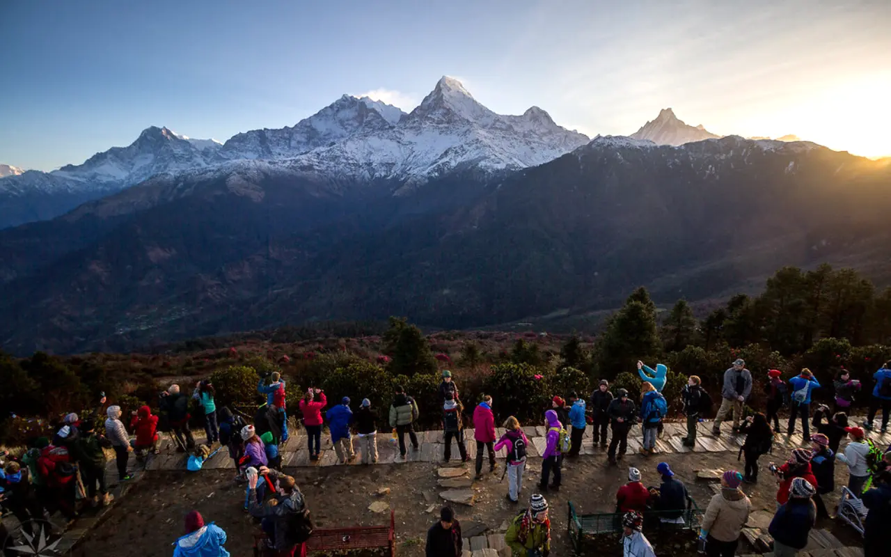

When travelers search for short trekking options from Pokhara, the Poon Hill trek is often the first result that appears online. It's easy to understand why — it can be completed in three to five days and is considered one of the most beginner-friendly treks in Nepal. The famous Poon Hill viewpoint also offers stunning sunrise views over the Dhaulagiri and Annapurna ranges.
However, with increasing popularity and rapid development, the experience has changed significantly. Today, many trekkers are searching for a quieter and more authentic alternative. This is where the Kokhe Danda Trek stands out, offering everything that the Poon Hill Trek once promised — peace, raw beauty, and a deeper connection with nature and local culture.
Escape the Crowds
In recent years, the Poon Hill Trek has become increasingly crowded. During peak trekking seasons, hundreds of trekkers gather at the viewpoint early in the morning, turning what should be a peaceful Himalayan sunrise into a busy and noisy experience.
In contrast, the Kokhe Danda Trek offers a much quieter journey. The trail sees only a handful of trekkers, and in many cases, you may not encounter other foreign travelers throughout your entire trek. This sense of solitude allows for a deeper and more personal connection with the mountains.

A More Authentic and Undiscovered Experience
The commercialization of the Poon Hill route has significantly changed its character. Traditional villages like Ghandruk have seen rapid infrastructure growth, with concrete buildings replacing many traditional homes. Authentic homestay experiences are now limited.
On the Kokhe Danda Trek, you can still experience genuine local hospitality. Villages like Haljure and Sarga offer authentic homestay stays, where you are welcomed with warm hospitality and served locally sourced, traditional meals. Exploring Lespar village gives a true glimpse into the lifestyle and culture of a Himalayan community.
In Lespar, you are not a tourist passing through — you are a guest welcomed into a living culture.
Better and Wider Himalayan Views
While Poon Hill is known for its sunrise views of the Annapurna and Dhaulagiri ranges, the viewing angle is relatively limited and often crowded, which can reduce the overall experience.
From Kokhe Danda, the views are even more expansive. In addition to Annapurna and Dhaulagiri, you can also witness peaks from the Manaslu and Langtang ranges, offering a wider and more immersive Himalayan panorama.

A More Rewarding Trekking Route
The trail to Ghorepani in the Poon Hill Trek has been impacted by road construction, with sections of the trek now following dusty roads shared with vehicles. This has reduced the natural charm of the journey.
On the other hand, the Kokhe Danda Trek remains largely untouched. The trail takes you through forests, ridgelines, and traditional villages, making the journey itself just as rewarding as the destination.
Authentic Homestays and Local Connection
Accommodation along the Kokhe Danda route enhances the overall experience. Unlike the standardized teahouses of Poon Hill, many places here still operate as family-run homestays.
You may even find yourself having an entire homestay to yourself, allowing for meaningful interactions with local families and a deeper understanding of their daily lives.
Cost and Accessibility
Both treks are relatively affordable, but the Kokhe Danda Trek offers better value in terms of experience. While Poon Hill is more accessible and shorter, Kokhe Danda provides a richer and more immersive journey without the crowds.
Kokhe Danda vs Poon Hill: Which One is Right for You?
If you are a first-time trekker looking for a short and easy trek with established infrastructure, Poon Hill may still be a suitable choice.
However, if you are seeking solitude, authentic culture, better views, and a less commercialized trekking experience, Kokhe Danda Trek is clearly the better alternative.
As trekking in Nepal continues to evolve, destinations like Kokhe Danda are becoming increasingly valuable for those who want to experience the Himalayas in their true form.
If you're looking to escape the crowds and discover a hidden gem, the Kokhe Danda Trek is the perfect choice.